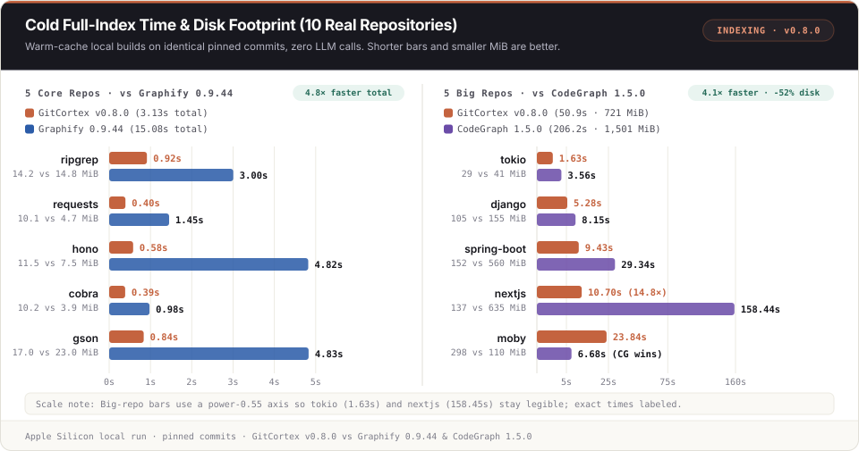

5 large repos · tokio, django, next.js, moby, spring-boot
vs CodeGraph 1.5.0
4.1× faster indexing
−52% total disk
−23.5% uncached tokens
See full CodeGraph comparison →
5 core repos · ripgrep, requests, hono, cobra, gson
vs Graphify 0.9.44
4.8× faster indexing
0 ambiguity errors
−32.9% uncached tokens
See full Graphify comparison →

How to read this chart & key takeaways
- Top rows = Evidence Accuracy (higher is better, max 1.000): Measures whether the assistant returned every required
file:linecitation with zero forbidden/wrong hits. GitCortex achieves 1.000 on both the 15-task core suite (15/15) and 10-task big-repo suite (10/10). - Bottom rows = Uncached Tokens (lower is better): Shows total newly-read tokens spent across the full suite compared to the grep baseline. GitCortex cuts uncached tokens by −32.9% vs Graphify’s core baseline and −23.5% on the 5 big repos.
- Reading competitor numbers fairly: Graphify’s lower aggregate token bar reflects 5 early exits on ambiguous symbol errors and 9 incomplete/failed tasks (0.533 accuracy); on the 6 tasks where Graphify scored 1.00, it did use fewer tokens (77k vs GitCortex’s 91k). CodeGraph scored 9/10 (missing
nextjs-callers-normalize-page-path) and used slightly fewer total tokens overall (−20.3% vs −16.8%) while GitCortex led on uncached tokens (−23.5% vs −20.7%).

How to read this chart & key takeaways
- Shorter bars & smaller MiB are better: Left panel compares cold full-index wall time and store size against Graphify 0.9.44 on 5 core repos (
3.13 svs15.08 s, 4.8× faster). Right panel compares against CodeGraph 1.5.0 on 5 large repos (50.9 svs206.2 s, 4.1× faster and 52% smaller disk). - Why the right panel uses a power-0.55 axis: Repo times span two orders of magnitude—from
tokio(1.63 s) to CodeGraph onnextjs(158.45 s). A gentle power axis keeps small repos readable while preserving exact measured labels on every bar. - Honest trade-off on
moby: CodeGraph finishes faster (6.68 s / 109.6 MiB) because it skips vendored Go directories (36.8k nodes), whereas GitCortex indexed the entire tree including vendored packages (269.4k nodes / 1.07M edges).